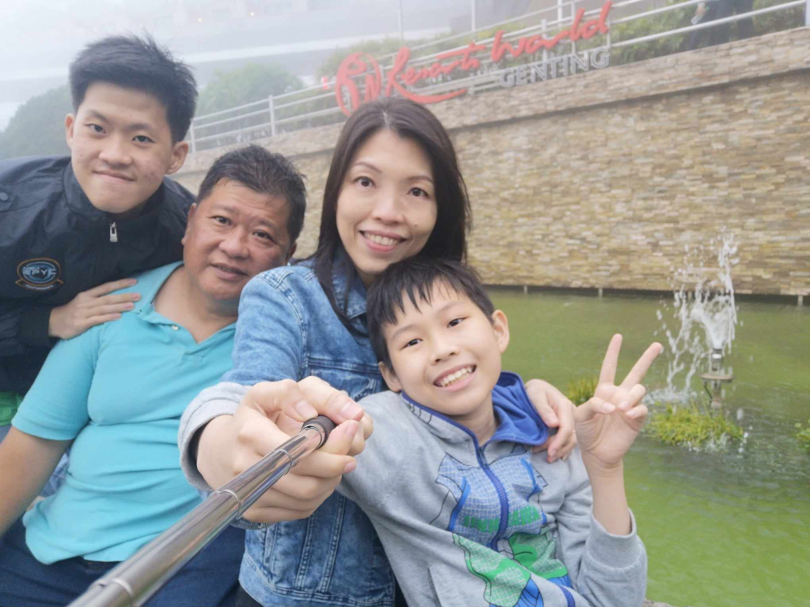
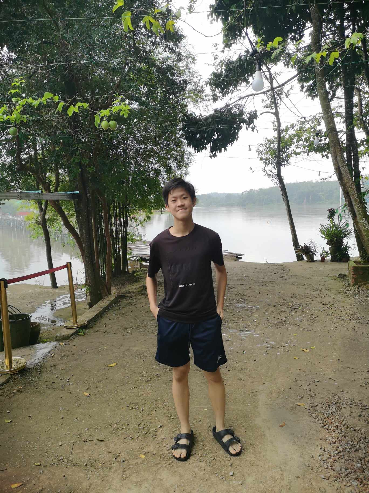
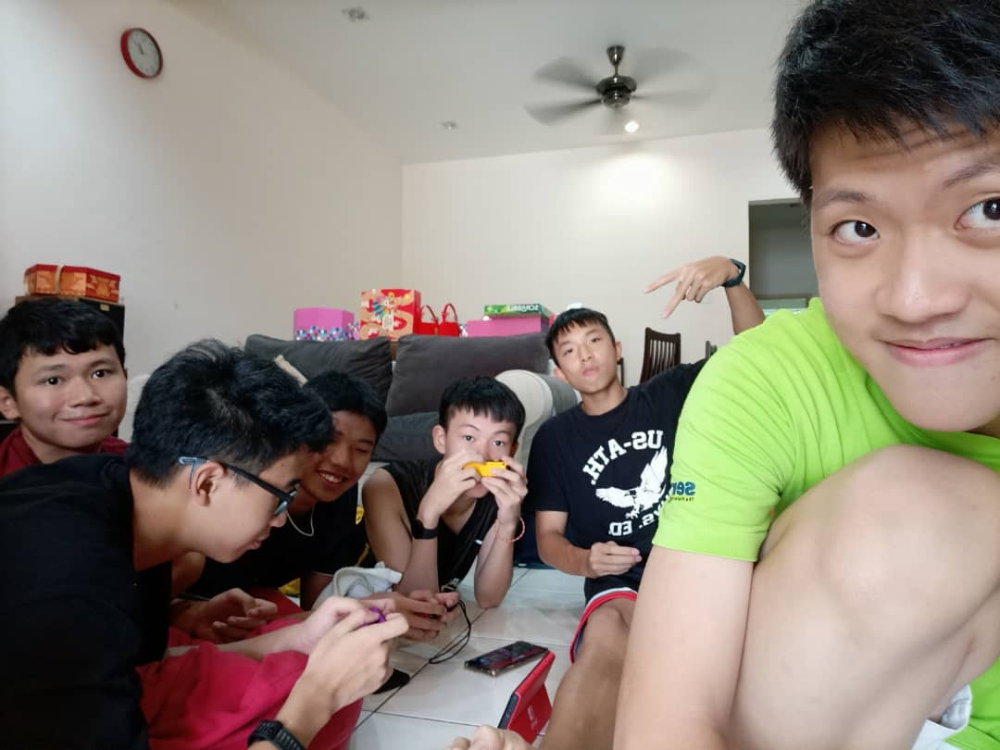

My family consists of 4 family members, which is me, my father, my mother and my brother. My father is a chubby middle aged man, but don't get fooled by his appearence, he is a very strong man. My father is currenly working as a restaurant manager, although he used to dabble in computers in the past. On the other hand, my mother is an "IT Warrior" that also does a lot of our household chores. She always encourage us to be more confident and independent. My little brother is a very mischevious boy. He would play pranks on me and sometimes beat me up even though I'm the elder one. However, he is an inteligent person. Although his grades may tell a different story, he has great memory and is very helpful. My brother is also a big fan of badminton. Despite having various differences, we love and care for each other. I love my family!
I have a lot of friends in school. When I say a lot, I mean a lot. First of all, there's Alfred. Alfred is my class's assistant monitor. He looks very tall and reliable.Then there's Ivan. He is very keen in biology and does a lot of studies on living objects. He likes to play chess as well. He rarely loses matchups against Alfred and the others. Thirdly, there is How Eu. He is atlethic and performs well in sports notably basketball and martial arts. We would often tease him because his appearence looked like Micheal Jackson but his actions were like Micheal Jordan. Lucas is also one of my best friends. Like How Eu, he is also a school athlete. Lucas excels in basketball and track and field sports. Although he is a school prefect, he is not full of himself, instead he prefers hanging out with us and tries to help other people whenever he could. I also have a friend named Yi Yang. He is a kind person and is very good in math. Lastly, my best friend is Yu Hang. Although small in size, you cannot deny that he is one of the top students at my school. He could solve questions that most of us would pull our hairs for days to solve it. He is also excellent at reciting Chinese poems. My friends were really cool people. I hope to have more friends like them in the future!
I have multiple interests. First of all, I love listening to music. I don't care if it's hip-hop, dance music, popular music or punk rock, as long it's music to my ears, it will be ringing in it every day. Secondly, I enjoy playing basketball or go for a swim during my free time. It helps me to relax so I can overcome my sleep deprivation problem. Thirdly, I like to play the guitar. Guitar is a very versatile music instument. You can litterally play anything on it as long you're skilled. Not to mention, I also like reading comic books and play lego when I have the time to do so. Lastly, I am also interested in participating in the Scouting Movement. I look forward to outdoor activities as it's thrilling and trains my disipline and leadership powers.
  